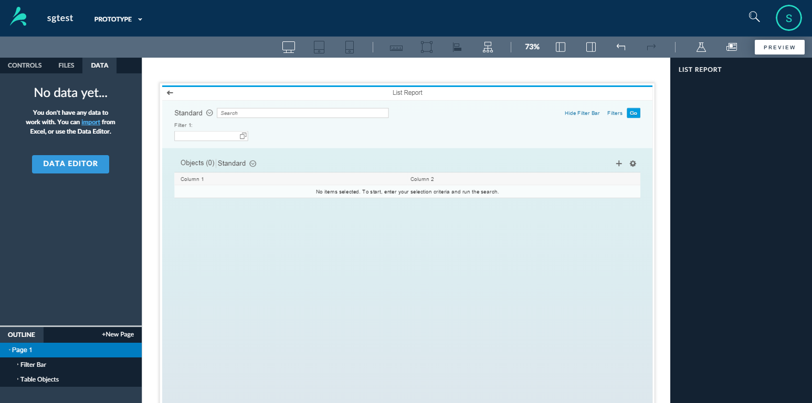

Smart template pages behave differently from other prototype pages in the application. Because they are driven by metadata, Smarte Templates require little front-end code, however they do not offer the flexibility of a freestyle application. Therefore, the SAP UI5 controls that you use in the context of a smart template prototype are limited to the ones supported by the Smart Template, and only the UI5 controls used by the Smart Template are proposed. You cannot drag these controls into the canvas. You drag controls into the Outline to add them to the page. The canvas displays a preview of your page.
You need to create and upload a data model to provide data for your prototype before you can use Smart Templates.
A smart template prototype consists of a list report page and one or more object pages.
Before you get started using Smart Templates to create list reports and object pages, take a few minutes to familiarize yourself with the smart template interface.
The Smart Template List Report Page
